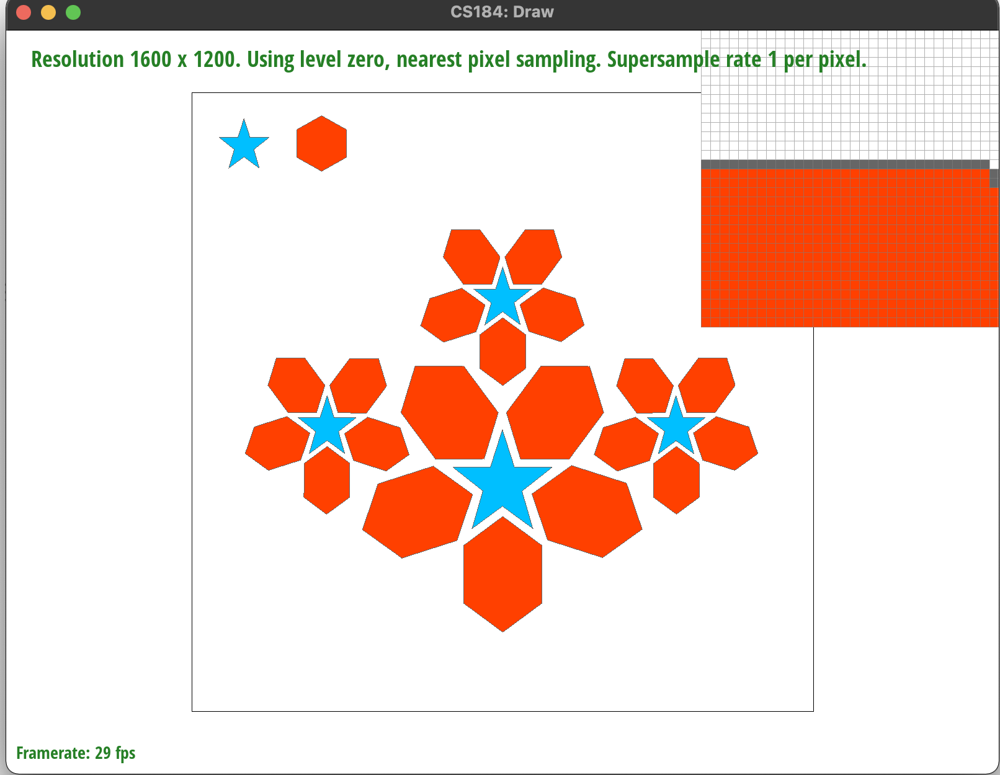

Overview
Give a high-level overview of what you implemented in this project. Think about what you've built as a whole. Share your thoughts on what interesting things you've learned from completing the project.
Section I: Rasterization
Part 1: Rasterizing single-color triangles
Description and ResultsIn this section of the project, we implemented the ability to rasterize triangles given three vertices and a color. We were able to successfully render the test SVG files with single color polygons in test3, test4, test5, and test6.
|
|
|
|
|

|
We followed the sampling method described in the lecture closely. First, we loop through each pixel within the possible space given by the largest x and y coordinates. For each pixel, we determine if it is inside the triangle, and if it is, we call rasterize_point to fill it in. We implemented the inside_triangle helper function, which returned a 1 if the point was inside the triangle and 0 if the point was outside the triangle. Inside_triangle, calls evaluate_line, a function that determines whether a point is above or below a line using the line equation. More specifically, inside_triangle calls evaluate_line 3 times to determine the point’s relation to each of the edges. Since we needed to account for both winding orders of the vertices, we checked to make sure that we correctly evaluate a point as being inside the triangle whether all 3 cases of evaluate_line were all <= 0 or >= 0.
Our algorithm is no worse than one that checks each sample within the bounding box of the triangle because we are simply iterating through each pixel within the bounding box and no more than that.
Setbacks and SolutionsThe main setback we faced in this task was making sure that our code worked regardless of the winding direction of the vertices. At first, our code only worked for the counterclockwise direction. We then attempted to switch vertices into the same direction each time, but that became very complicated. We finally took a step back and realized that we could just check both the unanimously positive and negative cases to determine both directions.
Part 2: Antialiasing triangles
Description and ResultsIn this task, we updated our functions to involve supersampling in order to get a less jaggy rendering of our images. Supersampling is a useful antialiasing technique that helps reduce unwanted artifacts from sampling. We were able to implement supersampling and successfully render tests 3-6 with different sample rates.
Below, we have test4 sampled at a rate of 1, 4, and 16. As we can see from the pixel inspector, as the sample rate increased, the less jaggies we saw and the blurrier our outline got. This is because with supersampling, we are taking more samples per pixel, then averaging their values. Therefore, pixels on the edges of our shapes take on the blended value of different colors within the pixels, making the transition smoother.

|
|
|
|
Our approach in a nutshell is to sample each pixel sample_rate times, then average these values within each pixel to get a singular color in each pixel.
In order to implement supersampling, we first updated the line that resizes the sample_buffer in set_sample_rate() to be width * height * sample_rate in order to make the buffer big enough to hold all of our new samples.
Under rasterize_triangle(), we added on to our implementation in task 1. However, for each pixel, we take sample_size samples rather than 1 sample. For each sample, we determine if the point is inside the triangle with the same helper functions we wrote in task 1. If the point is in the triangle, then we color the corresponding item in the samplebuffer.
In resolve_to_framebuffer(), we reduce the samples we have taken back to the original dimensions by averaging all of the samples taken at each pixel. To do this, we looped through each pixel, then averaged the individual r, g, and b values of the pixels. Then, we created a new Color variable, which gets translated to the framebuffer the same way it was done in the original code.
We also altered fill_pixel to accommodate our supersampling implementation. Since the sample_buffer increased in size, lines and points no longer rendered correctly. To solve this problem, we filled in all of the items associated with each pixel (sample_rate pixels) rather than just filling in one pixel.
Setbacks and SolutionsWe had a lot of failed attempts at figuring out exactly how to store our sampled pixel values in the newly resized sample_buffer. In the end, drawing out a couple of examples with different sample rates really helped us understand exactly what was going on. A major piece of the puzzle was to remember to scale the width by sqrt(sample_rate) as well as the x and y values.
Part 3: Transforms
Description and ResultsIn task 3, we implemented 3 transforms that are used to render robot.svg correctly. We also made a separate file, my_robot.svg, and changed the transformations of each body part to create an image of a robot waving with its left hand. In order to do this, we bend the second half of his left arm up in a 90 degree angle to simulate the waving hand. We then moved his right arm down by his side by first rotating both parts of the arm, then translating them down and closer to his body. We also changed the man’s head, torso, and limbs to different colors.
Approach and Implementation
To implement the transforms, we thought about what the transformation matrices would be for a 2D plane, then implemented these matrices as Matrix3x3 objects. These matrices are returned by each of the translate(), scale(), and rotate() functions.
Setbacks and SolutionsAt first, we had a really difficult time trying to visualize how transformations would appear on screen in order to create a pose for the robot. We tried a running pose at first, but found it difficult to portray since the robot ended up looking really strange even when angles were only slightly off. We settled for making our robot wave, which is an easier pose, but we wanted to get it perfect.
Section II: Sampling
Part 4: Barycentric coordinates
Description and ResultsBarycentric coordinates are a coordinate system where points can be specified by the locations of 3 coordinates forming a triangle. This allows us to interpolate values so that we can create smoothly varying values across the three coordinates. For example, the image below shows 3 vertices which are red, green and blue. The coordinates of each point are used to calculate alpha, beta, and gamma values, which are used as weights to average the colors of the 3 vertices at each point within the triangle, creating a smooth gradient across.
In this task, we were able to successfully output the gradient color wheel in test 7.
Approach and Implementation
We implemented the barycentric interpolation by making a slight adjustment to the task 2 supersampling code. Instead of recording the given color in the sample_buffer, we calculate alpha, beta, and gamma with the given coordinates and use these to calculate the weighted average of the 3 colors. This value is then recorded in the buffer as the color of that point.
Setbacks and SolutionsA small setback we faced was that at first, we removed the part of the code that checks to see if a point is within a triangle, which led to bad results. We realized that barycentric interpolation is only used to calculate the color values and that we still need to make sure that the points are within the triangle.
Part 5: "Pixel sampling" for texture mapping
Description and ResultsIn task 5 we implemented texture mapping using two pixel sampling methods: nearest neighbor and bilinear interpolation. Essentially, both of these pixel sampling methods attempt to translate our texture onto the object we are viewing. We define the screen space with (x,y) and the texture map space as (u, v). We first use Barycentric Coordinates to map our (x,y) coordinates into the (u,v) space. Nearest neighbor simply samples whatever the closest pixel to our mapped point. Bilinear samples the 4 closest neighbors and averages them through 2 rounds of linear interpolation.
The following images show an example of nearest and bilinear sampling at 1 sample per pixel and 16 samples per pixel.
|
|
|
|
|
|
As we can see, in the nearest pixel sampling method with a supersample rate of 1, we lose the definition in the white latitude line that crosses the land area. However, the line is present with bilinear sampling. This is likely because the nearest neighbor calculations always landed at a pixel without the white line. However, by taking the average of the 4 neighbors using bilinear sampling, we get an off-white line. In this case, the bilinear sampling method produced a clearly better result that retained more information. However, we get very similar results with a supersample rate of 16 with both methods. To the naked eye, there are very little differences. It makes sense for there to be a larger difference between the two methods at lower supersample rates since supersampling already takes an average within a pixel, allowing more variance in color and therefore more information to be included. At a lower sampling rate the averaging effect of bilinear sampling makes a more visible difference.
Approach and ImplementationTo translate points from the (x,y) coordinates to the (u,v) space, we calculated alpha, beta, and gamma with the (x,y) coordinate. We then took the weighted average of the corresponding given (u,v) coordinates with these weights to calculate the exact (u,v) coordinate.
We implemented nearest neighbor sampling by rounding the (u,v) coordinate we found to the closest integer (pixel), making sure to check that the point exists in the (u,v) space.
We implemented bilinear sampling by computing the closest 4 pixels to our (u,v) point, making sure to check that they are within bound. We then calculate 2 horizontal lerps, one for the top two pixels and one for the bottom two. Then, we use the results to calculate a vertical lerp. The result is the color we end up with.
Setbacks and SolutionsA setback we faced was making sure that edges were rendered correctly. We were getting a streak of gray on the Berkeley logo test during nearest neighbor sampling and weren’t sure why. We realized that this was due to the fact that sometimes the calculations resulted in (u,v) coordinates that weren’t in the texture map space. We made sure to check for bounds and clip points that are out of bounds (fill them with the closest existing coordinate), which solved our problem.
Part 6: "Level sampling" with mipmaps for texture mapping
Description and ResultsLevel sampling is a way to handle scaling down texture data when there are too many texels in one pixel, something that usually happens when the objects in the image are at a greater distance. Each level of the mipmap stores a different filter of the original image with decreasing levels of detail. In task 6, we implemented mipmap level sampling through three different methods: zero-level sampling, nearest level sampling, and bilinear level sampling. Zero-level sampling essentially functioned the same as our original solution for task 5, handling level sampling for the zeroeth MipLevel. Nearest level sampling used the adjacent pixels—(x+1, y) and (x, y+1)---to determine the appropriate MipLevel. Bilinear level sampling sampled along the closest two levels, upper and lower, and computing the weighted sum of each corresponding sample.
Pixel sampling has the worst antialising power since we finer details in images could lead to inconsistent results depending on which value the sample pulls at each pixel. However, since we are only sampling once per pixel, this method is pretty performance efficient. In terms of memory, we are just storing the image file itself. Supersampling improves upon the antialiasing power of pixel sampling, by sampling multiple times within one pixel to determine the resulting color or texture. This of course has a speed cost since we now need to sample n^2 more frequently where n is the sample rate. The memory cost is comparable to that of pixel sampling, with the additional n*n storage cost for the color of each supersampled value, although depending on implementation, this could potentially be avoided. Level sampling helps increase speed, since we are essentially precomputing lower resolution mip levels and working less frequently with larger amounts of texture data. Since we avoid oversampling smaller objects, it also increases antialising power. However, since we need to store many miplevels along with the original image file, we increase the memory cost.
Four combinations of beans|
|
|
|
|
|
Since we implemented task 5 independently from task 6, we first modified our rasterize_textured_triangle method so that it passed SampleParams into the Texture::sample call instead of individually calling either sample_bilinear or sample_nearest. To do so, we also calculated the du_dy, du_dx, dv_dy and dv_dx values using the same technique involving barycentric coordinates that we used for Task 5. In the sample method itself, we handled each lsm setting as individual cases, calling either sample_nearest or sample_bilinear using the appropriate level. For the nearest level sampling technique, we used get_level to compute appropriate level using the dy_uv and dx_uv vectors passed in through SampleParam and taking the log of the max of the norms of each. For the bilinear level sampling technique, we computed the weighted sum of sampling results from the upper and lower levels, which we computed by using the floor and ceiling of our continuous float level.
Setbacks and SolutionsWe initially ran into an issue where we got an error when trying to switch levels. We found out that this error was actually due to us forgetting to restrict the bounds of the levels we returned (clamping to avoid negative levels or levels greater than mipmap.size() - 1). We also forgot to scale our dy_uv and dx_uv vectors by the width and height of our frame. In our rasterize method, we ran into issues with calculating the barycentric coordinates to generate dy_uv and dx_uv. Since this method was meant to handle supersampling as well, we realized that we had to increment x and y for each respective parameter by increment_size (the step size calculated according to the size of our supersample) instead of by 1.
Section III: Art Competition
If you are not participating in the optional art competition, don't worry about this section!
Part 7: Draw something interesting!
Github website link:https://mchen9129.github.io/project-webpages-sp23-mchen9129/proj1/index.html